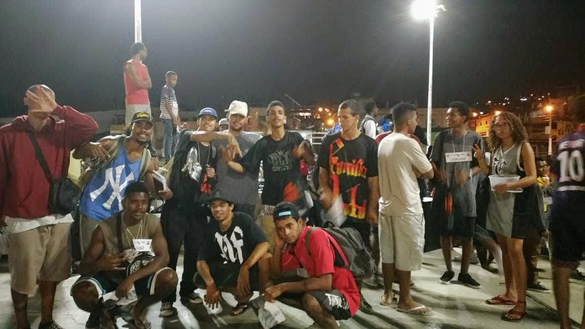
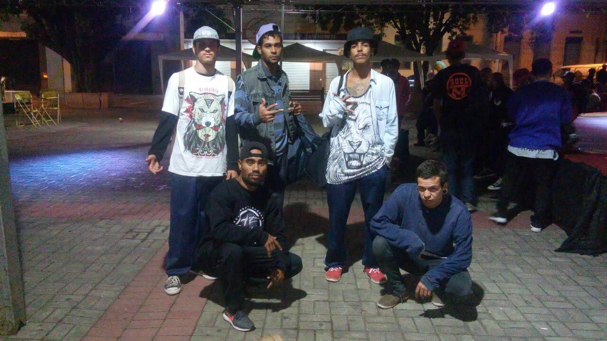
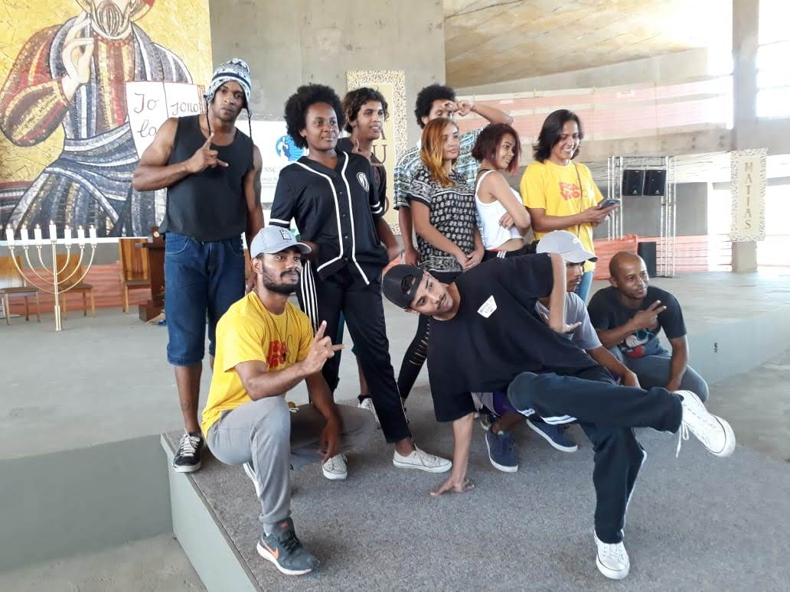

Quem sou eu?
Minha Caminhada na Cultura
2004

Comecei como dançarino e entrei para o coletivo Impacto, onde atuei como dançarino e coreógrafo até 2009.
2008

Participei das oficinas do Fica Vivo, onde conheci o professor Luiz Fernando (Black-A) e aprofundei meus conhecimentos na cultura Hip Hop.
2013

Fundamos a Bio Dínamo Crew, oferecendo aulas gratuitas e criando o evento Combate em Família.
2017

Entrei como oficineiro no Fica Vivo e ajudei a criar a Casa do HipHop Prúzoto e a TV Prúzoto.
2017

Criei a Curuma’s Breaking School, inspirada por uma faculdade de Hip Hop nos EUA.
2018

Nasceu o Acervo da Cultura HipHop de Santa Luzia.
2019

Formamos o coletivo Curuma’s Breakers.